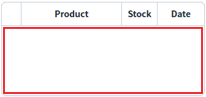
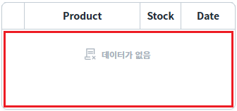
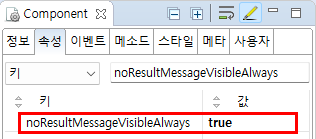

GridView의 'noResultMessageVisibleAlways' 속성을 사용하여, 데이터가 없는 경우 표시되는 메시지를 항상 표시하도록 설정한 예제입니다.
'noResultMessage' 표시의 기본 동작은 연결된 DataList에 데이터가 없이 최초 로딩된 경우에는 표시하지 않습니다. 'noResultMessageVisibleAlways' 속성을 'true'로 설정하여 'noResultMessage'를 항상 표시할 수 있습니다.
GridView의 'noResultMessage' 속성을 통해 화면에 표시할 메시지를 설정할 수 있습니다.
(기본 설정) 최초 GridView에 할당된 Data가 없는 경우 메시지 미표시
GridView에 할당된 Data가 없는 경우 메시지 표시
이 예제의 GridView는 동일한 DataList가 연결되어있습니다. DataList는 선언만 되어있는 상태이며 별도의 Data가 할당되지 않은 상태입니다. 브라우저에 실행된 GridView의 바디 영역의 메시지 표시 영역을 확인합니다.
예제 영역 '(기본 설정) 최초 GridView에 할당된 Data가 없는 경우 메시지 미표시'에 구성된 GridView에서 테스트합니다.1
STEP 1: 실행 결과를 확인합니다.
GridView의 바디 영역이 공백으로 표시됩니다.
Image 1.브라우저(Chrome) 실행 예시

예제 영역 'GridView에 할당된 Data가 없는 경우 메시지 표시'에 구성된 GridView에서 테스트합니다.1
STEP 1: 실행 결과를 확인합니다.
GridView의 바디 영역에 '데이터가 없음' 메시지가 표시되는 것을 확인합니다.
Image 2.브라우저(Chrome) 실행 예시

GridView의 속성을 정의합니다.
[필수] noResultMessageVisibleAlways="true"
[default: false, true] GridView에 출력된 Data가 없는 경우 메시지 출력합니다.
Image 3.웹스퀘어 스튜디오의 Component View - 속성 설정 예시

Example 1.Source
<!-- gridView 의 소스 본문 예시 --> <w2:gridView noResultMessageVisibleAlways="true"> <!-- 중략 --> </w2:gridView>
noResultMessageVisibleAlways
noResultMessage